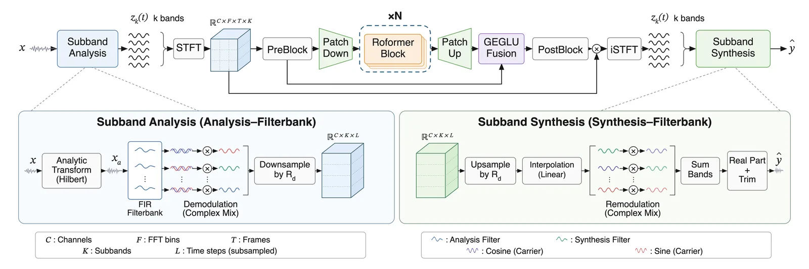
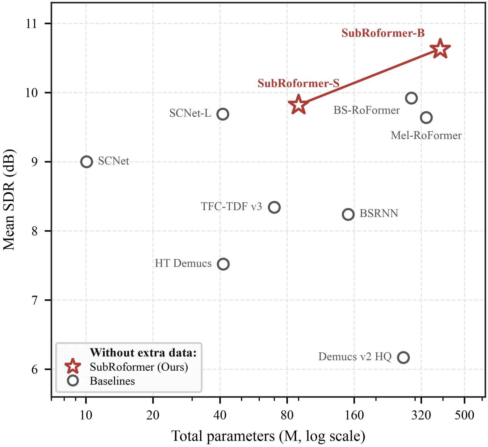

O Desafio da Separação de Fontes Musicais
A separação de fontes musicais (MSS) é o problema de isolar componentes individuais — como vocais, baixo, bateria e outros instrumentos — a partir de uma gravação misturada. Esse processo é fundamental para aplicações que vão desde remixagem e restauração de áudio até análise de informação musical e geração de conteúdo. No entanto, a tarefa é inerentemente difícil: instrumentos diferentes frequentemente se sobrepõem tanto no tempo quanto na frequência, e suas características sonoras variam drasticamente com o tom, a articulação e as condições de gravação.
Métodos tradicionais, baseados em análise de cena auditiva ou fatoração matricial, dependem de suposições como independência de fonte ou harmônicos, que nem sempre se sustentam em gravações reais. A era das redes neurais supervisionadas trouxe avanços significativos, mas exige pares de dados (mistura e stems isolados) que são escassos. Além disso, há um trade-off constante entre a necessidade de capturar detalhes acústicos finos (como transientes e fase) e a limitação de comprimento de sequência que os modelos de contexto longo, como Transformers, podem processar eficientemente.
Sistemas existentes operam predominantemente em dois formatos: formas de onda brutas ou espectrogramas de banda larga. Entradas em forma de onda contêm um número massivo de amostras, exigindo encoders aprendidos para compressão. Já os sistemas baseados em STFT (Short-Time Fourier Transform) expõem a estrutura de frequência em uma grade comum, mas impõem um compromisso fixo de resolução tempo-frequência para todas as faixas. O SubRoformer propõe uma terceira via, combinando a análise em sub-bandas com uma arquitetura Transformer residual otimizada para lidar com essa complexidade.
Os autores, Chunyat Wu, Chuang Ding, Paris Smaragdis e Qiuqiang Kong, provenientes do Chinese University of Hong Kong, Moonstep AI e MIT, apresentam o SubRoformer como uma arquitetura que decompõe a mistura em sinais localizados em frequência e de menor taxa. O objetivo é permitir que o modelo de separação foque em relações temporais e cruzadas entre bandas, sem ser sobrecarregado pela resolução de amostragem original do áudio.

Arquitetura: Frontend de Sub-bandas e Separação Axial
O cerne do SubRoformer reside em sua estratégia de pré-processamento e separação. O frontend converte a entrada analítica (forma de onda estéreo) em um banco de 128 sub-bandas sobrepostas. Diferente de métodos que usam apenas escalas mel, o SubRoformer utiliza uma escala mel para as bandas de baixa frequência e uma escala linear com intervalos de 390 Hz para as altas frequências. Essa escolha visa capturar melhor a densidade harmônica nas baixas frequências enquanto mantém resolução suficiente para os agudos.
Após a análise, cada sub-banda é demodulada e decimada por um fator de 60, resultando em um sinal de base complexa com taxa de amostragem de 800 Hz. Em seguida, aplica-se uma STFT local com janela Hann de 32 pontos e hop de 8 amostras, gerando uma grade temporal fina de 100 quadros por segundo. Esta grade fina é crucial para prever máscaras complexas precisas, preservando detalhes temporais que seriam perdidos em downsamples mais agressivos.
O módulo de separação, baseado em RoFormer (um Transformer com atenção axial e residual), opera em uma representação temporalmente comprimida. Os quadros da grade fina são agrupados em patches temporais com fator de quatro. Isso reduz a taxa de entrada para o corpo do RoFormer para apenas 25 quadros por segundo. Essa redução drástica no comprimento da sequência permite que o modelo processe contextos temporais muito mais longos com custo computacional gerenciável, essencial para capturar a estrutura musical de longo prazo.
O RoFormer axial é composto por camadas que modelam dependências tanto no tempo quanto na frequência. No SubRoformer-S, há seis camadas com dimensão de modelo de 384; no SubRoformer-B, doze camadas com dimensão de 576. A arquitetura axial permite que a atenção seja calculada de forma eficiente em duas dimensões (tempo e banda), capturando relações cruzadas entre diferentes instrumentos que ocupam faixas de frequência distintas.
Mecanismo de Fusão e Predição de Máscaras
Uma inovação chave do SubRoformer é o mecanismo de fusão residual gated. O modelo não depende apenas das características de baixa taxa processadas pelo RoFormer. Ele combina o contexto de longo alcance (obtido nos patches de 25 Hz) com as características de alta resolução (da grade de 100 Hz) através de uma fusão residual com gate. Isso permite que o modelo utilize informações temporais globais para guiar a precisão local das máscaras.
O objetivo final é estimar máscaras complexas para cada stem (vocal, baixo, bateria, outros). As máscaras complexas operam no domínio da frequência complexa, preservando tanto a magnitude quanto a fase do sinal original, o que é crítico para a reconstrução de áudio de alta qualidade. A predição ocorre na taxa fina de 100 Hz, garantindo que transientes rápidos e detalhes finos sejam capturados corretamente.
Após a estimativa das máscaras, o processo de reconstrução inverte as etapas do frontend. As sub-bandas estimadas são interpoladas, remoduladas e somadas para gerar a forma de onda final de cada stem. O uso de um banco de sub-bandas sobrepostas e um caminho de síntese explícito ajuda a mitigar artefatos de aliasing e garante uma transição suave entre as bandas.
A decisão de separar a redução temporal em duas formas — decimação de taxa de amostragem nas sub-bandas e agrupamento em patches no Transformer — é estratégica. A primeira reduz a carga computacional da análise espectral local, enquanto a segunda permite que o modelo de atenção opere em uma sequência mais curta, focando na estrutura musical sem perder a resolução necessária para a síntese.
Configuração Experimental e Treinamento
Os experimentos foram conduzidos no conjunto de dados MUSDB18-HQ, que contém 100 músicas de treino e 50 de teste, com áudio não compactado a 44.1 kHz. Todos os modelos foram reamostrados para 48 kHz e operam em sinais estéreo. O treinamento utilizou uma política de aumento de dados consistente, incluindo escalonamento de ganho, troca de canais estéreo, inversão temporal e inversão de polaridade, além de stem-dependent mixup.
A otimização foi feita com AdamW, taxa de aprendizado máxima de 3e-4, e schedule coseno sem restarts. O treinamento foi realizado com precisão mista bfloat16. O SubRoformer-S foi treinado em uma única GPU RTX 4090, enquanto o SubRoformer-B utilizou seis GPUs RTX 5090. Um ponto importante é que os modelos foram treinados apenas com os 100 tracks do MUSDB18-HQ, sem dados externos adicionais, o que testa a capacidade de generalização do modelo dentro do domínio específico.
Para fins de comparação, os autores também avaliaram configurações com 64 sub-bandas e fatores de decimação diferentes, demonstrando a robustez da abordagem. A ablação mostrou que manter a grade fina de 100 Hz para a predição de máscaras é crucial, mesmo quando o corpo do Transformer opera em 25 Hz.
O uso de um Average Moving Exponential (EMA) dos parâmetros, com decaimento de 0.999, ajudou a estabilizar o treinamento e melhorar a performance final. O treinamento durou um milhão de atualizações do otimizador para ambos os tamanhos de modelo no cenário de dados limitados.

Resultados e Análise de Desempenho
No conjunto de teste do MUSDB18-HQ, o SubRoformer-B, treinado apenas com os dados do próprio conjunto, atingiu um SDR médio de 10.63 dB across os quatro stems. Este resultado supera o BS-RoFormer (treinado com dados públicos similares) em 0.61 dB e o Mel-RoFormer em 0.99 dB. A comparação é favorável em todos os stems em relação ao Mel-RoFormer.
É importante notar que o BS-RoFormer ainda mantém uma vantagem de 1.38 dB no stem de baixo. Isso sugere que, embora a abordagem de sub-bandas seja geral e eficaz, há desafios específicos na separação de frequências graves muito densas, onde a resolução temporal e espectral precisa ser ainda mais refinada.
Quando 500 músicas adicionais foram usadas no treinamento, um único modelo multi-stem do SubRoformer alcançou um SDR médio de 11.59 dB, estabelecendo novo estado da arte entre sistemas single-model treinados com dados extras. Isso demonstra a escalabilidade da arquitetura quando mais dados estão disponíveis.
A eficiência do modelo também é destacada. Como mostrado na Figura 4, o SubRoformer atinge alto desempenho com menos parâmetros totais comparado a alguns concorrentes, graças à compressão temporal eficiente do RoFormer axial e à análise de sub-bandas otimizada.
Limitações e Trabalhos Futuros
Apesar dos resultados promissores, os autores destacam limitações importantes. Os resultados apresentados são baseados em um único seed de inicialização para algumas ablações, o que significa que as observações são direcionais e não causais. Para validar robustez, seriam necessários múltiplos seeds, medições de eficiência detalhadas e ablações com parâmetros correspondentes em todos os stems.
A comparação com o BS-RoFormer no stem de baixo revela que a separação de fontes graves continua sendo um ponto de dificuldade. A arquitetura atual pode não capturar perfeitamente as nuances de baixa frequência em misturas complexas, sugerindo necessidade de ajustes na resolução das sub-bandas inferiores ou no mecanismo de atenção para essas faixas.
Além disso, o uso de um banco de sub-bandas fixo e pré-definido, embora eficiente, limita a adaptabilidade do modelo a gêneros musicais com características espectrais muito distintas das presentes no MUSDB18. Modelos que aprendem a divisão de bandas dinamicamente poderiam oferecer ganhos adicionais, mas ao custo de maior complexidade.
Os autores enfatizam que a transformação de resultados preliminares em afirmações robustas de journal requer mais experimentação controlada. A comunidade deve considerar o SubRoformer como uma arquitetura sólida e eficiente, mas ainda em evolução, especialmente no que tange à generalização para além dos dados de treino padrão e à separação de fontes de baixa frequência.
Conclusão
O SubRoformer representa um avanço significativo na separação de fontes musicais ao combinar análise de sub-bandas com Transformers axiais residuais. Ao decompor o áudio em sinais de baixa taxa e processar contexto temporal em patches, o modelo equilibra eficiência computacional e fidelidade acústica.
Os resultados no MUSDB18-HQ demonstram que é possível alcançar estado da arte sem dados externos, superando métodos anteriores em eficiência e desempenho geral. A arquitetura oferece uma alternativa viável para sistemas de MSS que precisam de alta qualidade e baixo custo de inferência.
Para desenvolvedores e pesquisadores, o SubRoformer destaca a importância de não tratar tempo e frequência de forma monolítica. A separação de preocupações — análise local fina versus modelagem global eficiente — é uma estratégia poderosa para problemas de áudio de alta resolução.
O código e os checkpoints foram liberados, permitindo que a comunidade valide e estenda a abordagem. A expectativa é que futuras pesquisas explorem ajustes nas sub-bandas graves e validações estatísticas mais rigorosas para consolidar as vantagens do SubRoformer como padrão na área.
O que fica
- SubRoformer divide o áudio em 128 sub-bandas, reduzindo a taxa de amostragem e o custo computacional do Transformer.
- O modelo prediz máscaras complexas em 100 Hz, mas processa contexto temporal em apenas 25 Hz usando patches.
- Alcança SDR médio de 10.63 dB no MUSDB18-HQ sem dados extras, superando o BS-RoFormer em 0.61 dB.
- A abordagem mantém detalhes acústicos finos enquanto modela relações de longo alcance entre bandas.
Paper original: SubRoformer: Subband Time-Domain Representation for Music Source Separation
Comentários
Nenhum comentário ainda. Seja o primeiro.